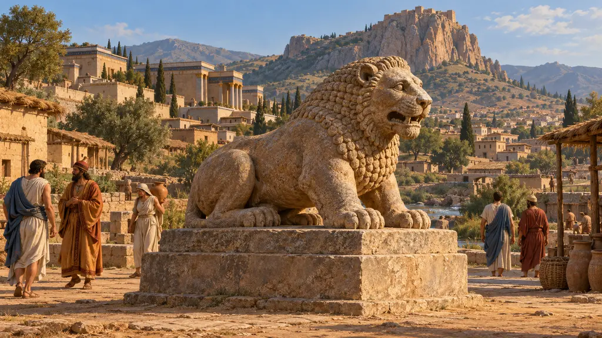
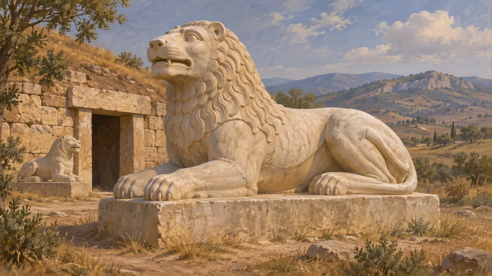
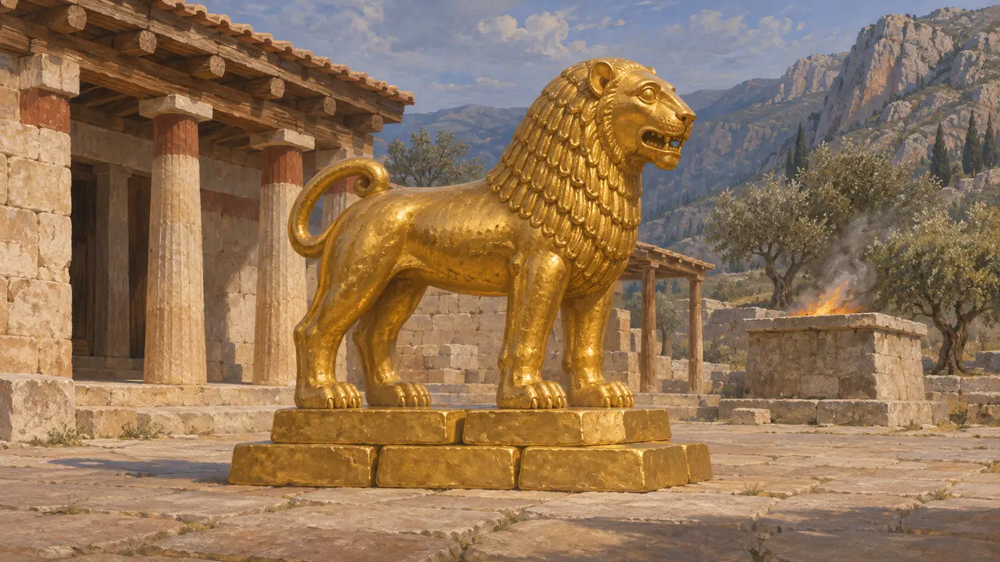
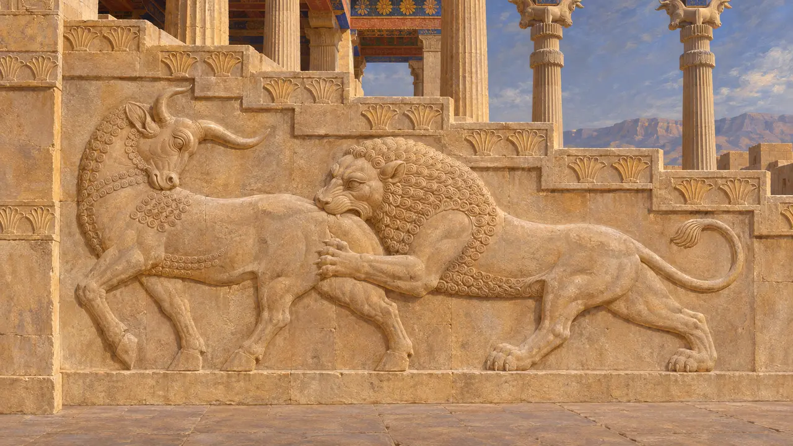
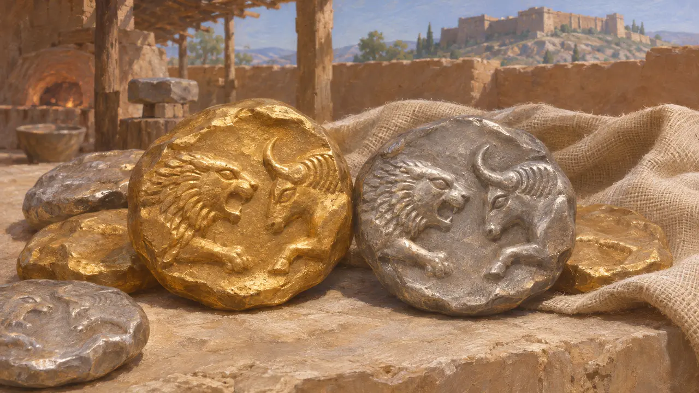
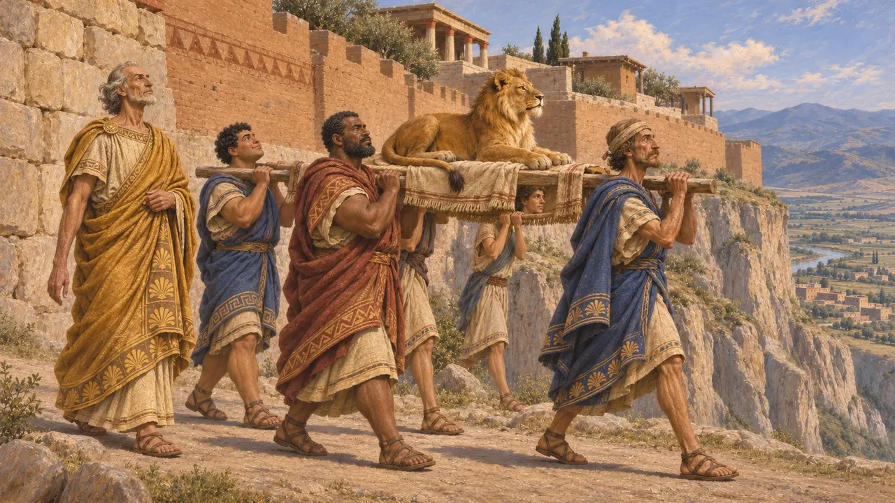

석사자
리디아의 사르디스와 페르시아 왕도들의 사자 조각, 기원전 6~5세기
페르시아인이 오기 훨씬 전부터 서아시아 곳곳에서 조각된 사자가 무덤과 성문, 성스러운 장소를 지켰으며, 리디아에서 사자는 왕실의 상징에 가까웠습니다. 페르시아에서 이 동물은 주로 궁전 부조와 유약 벽돌, 인장에 등장하여 황소를 공격하거나, 행렬 속에서 걷거나, 왕의 영웅과 싸웠습니다. 두 땅 모두에서 사자는 힘과 왕권을 상징했습니다.
게임에서: 게임에서는 받침대 위에 웅크린 사자인 석사자를 사르디스, 파사르가다에, 파르사, 수사에 세울 수 있습니다. 홀로 선 사자상은 리디아에는 어울리지만, 페르시아 궁전에서는 사자를 주로 부조와 유약 벽돌로 표현했으므로 페르시아 도시에 두는 것은 단순화입니다.

사르디스의 대리석 사자상
당대 기록사르디스 발굴에서는 기원전 6세기의 아르카이크 대리석 사자상이 여럿 출토되었는데, 대부분 웅크리거나 앉은 모습이다. 상당수는 아마 무덤 위나 입구에 수호상으로 놓였을 것이다. 세계 최초의 주화 가운데 하나인 리디아의 초기 호박금 주화에는 사자 머리가 새겨져 있으며, 아마 리디아 왕들의 치세에 주조되었을 것이다. 이러한 출토품은 사자가 리디아 왕권과 얼마나 긴밀히 결부되어 있었는지를 보여 준다.
G. M. A. Hanfmann and N. H. Ramage, Sculpture from Sardis, 1978

델포이에 바친 크로이소스의 황금 사자
고대의 전승헤로도토스에 따르면 크로이소스는 델포이의 아폴론에게 무게 10탈란트의 정련된 금 사자상을 바쳤으며, 이 사자상은 금 반쪽 벽돌을 쌓은 더미 위에 놓였다. 후대 저술가들이 기원전 548년의 일로 보는 화재로 신전이 불탔을 때, 사자상은 떨어지면서 무게 가운데 3탈란트 반을 잃었다. 헤로도토스는 자기 시대에 이 사자상이 코린토스인의 보물고에 보관되어 있었다고 덧붙인다. 오늘날 사자상은 전혀 남아 있지 않다.
Herodotus 1.50

페르시아 궁정 미술 속의 사자
당대 기록페르세폴리스에서는 아파다나를 비롯한 여러 건물의 계단에 황소를 공격하는 사자가 새겨져 있고, 궁전 출입구에는 뒷발로 일어선 사자나 괴수를 찌르는 왕실 영웅이 보인다. 수사에서는 아마도 다리우스의 궁전에서 나왔을 유약 벽돌로 된 걷는 사자 행렬 프리즈가 지금 루브르 박물관에 있다. 페르세폴리스 성채 서판에 찍힌 인장 자국에도 사자를 움켜쥔 영웅들이 나타난다. 리디아와 달리 페르시아에서는 홀로 선 수호 사자상이 거의 알려져 있지 않다.
M. C. Root, The King and Kingship in Achaemenid Art, 1979

사자와 황소 주화는 누구의 것이었나
분쟁 중서로 마주 보는 사자와 황소의 앞몸이 새겨진 금화와 은화는 크로이세이드라 불리며, 오랫동안 크로이소스의 것으로 여겨졌습니다. 일부 학자들은 이 계열의 일부가 다리우스가 자신의 주화를 도입하기 전, 페르시아 지배하의 사르디스에서 주조되었다고 주장했습니다. 2005년에 발표된 사르디스 발굴 층위 출토 주화들은 크로이소스 치세에 주조가 시작되었음을 뒷받침하지만, 이 계열이 얼마나 오래 이어졌는지는 여전히 논쟁 중입니다.
N. Cahill and J. H. Kroll, New Archaic Coin Finds at Sardis, American Journal of Archaeology, 2005

성벽을 돌아 옮겨진 사자
후대의 전설헤로도토스에 따르면, 사르디스의 옛 왕 멜레스는 후궁이 낳은 사자 한 마리를 얻었다. 예언자들은 그 사자를 성벽 둘레로 데리고 돌면 도시가 결코 함락되지 않으리라고 말했다. 멜레스는 성채의 가파른 한 구간을 빠뜨렸는데, 키루스가 사르디스를 함락할 때 페르시아인이 기어오른 곳이 바로 그곳이었다. 이 이야기는 도시의 함락을 나약함이 아닌 운명의 탓으로 설명한다.
Herodotus 1.84
출처
- Herodotus 1.50
- Herodotus 1.84
- G. M. A. Hanfmann and N. H. Ramage, Sculpture from Sardis, 1978
- M. C. Root, The King and Kingship in Achaemenid Art, 1979
- N. Cahill and J. H. Kroll, New Archaic Coin Finds at Sardis, American Journal of Archaeology, 2005
- P. Briant, From Cyrus to Alexander, 2002